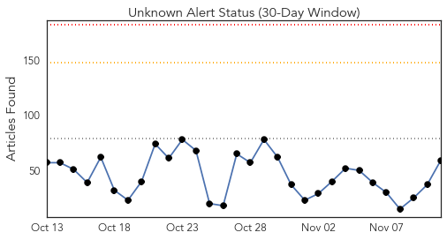
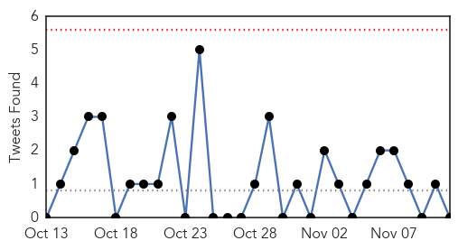
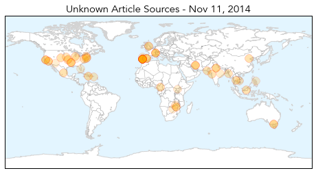
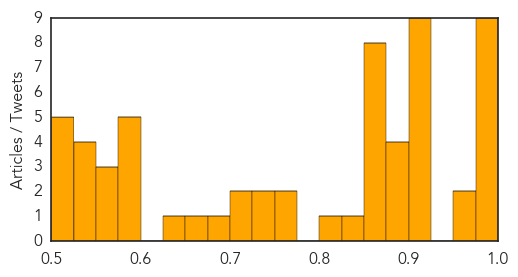

Toggle navigation
Early Warning
Daily Alerts
Unknown
Nov 11, 2014
30 Day Trends
Web: 0
alerts
, 0
warnings
Twitter: 0
alerts
, 0
warnings
Top Articles:
Showing top 50 articles...
0.998
Legionnaires' outbreak in Portugal a 'major public health emergency', WHO says
0.994
Portugal Legionnaires' disease outbreak kills five
0.994
Mass Flu Clinics Rescheduled
0.993
WHO: Legionnaire's outbreak major health emergency
0.993
WHO calls Portugal's Legionnaire's outbreak a major public health emergency
0.993
Portugal Legionnaire's outbreak 'major public health emergency'
0.987
Legionnaires' outbreak in Portugal "major public health emergency": WHO - Xinhua
0.978
Five dead, 233 infected in Portugal outbreak
0.978
Number of Portuguese infected with Legionnaires' disease rises to 278
0.955
Portugal Legionnaires' disease outbreak kills five - Panorama
0.955
Polio this week as of 4 November 2014 - World
0.917
Chicago Tribune
0.917
Chicago Tribune
0.917
Chicago Tribune
0.917
Chicago Tribune
0.917
Chicago Tribune
0.917
Chicago Tribune
0.910
The world windows to Thailand
0.910
The world windows to Thailand
0.910
The world windows to Thailand
0.898
Portugal traces deadly Legionnaires' outbreak to cooling towers
0.897
NAACP conventioners fall sick due to Norovirus
0.895
Portugal traces deadly Legionnaires' outbreak to cooling towers
0.889
Portugal traces deadly Legionnaires' outbreak to cooling towers
0.869
Badin's first polio case surfaces, provincial toll rises to 24
0.866
Yahoo buys video ad service BrightRoll for $640 mln
0.866
Abbott, Putin urge speeding up of probe into Flight MH17 crash, Kremlin says
0.866
Abbot, Putin urge speeding up of probe into Flight MH17 crash, Kremlin says
0.866
US says cannot confirm status of Islamic State leader after strike
0.865
Benton County Flu Clinics - Story
0.862
Virus may affect mental abilities: US researchers
0.854
RUH asks for help to keep it norovirus-free this winter
0.831
A dozen NAACP conventioners rushed to the hospital with norovirus in San Francisco Bay Area
0.806
Bangladesh: MSF responds to an upsurge in malaria cases - Bangladesh
0.772
Meet chlorovirus ATCV-1, a virus that can make humans more stupid : LIFE : Tech Times
0.763
Study: Anti-Typhoid Gene Found, May Improve Vaccines — Naharnet
0.745
Econet Zimbabwe taps into nanotech and water, what’s next?
0.735
Europees Jaar van de Ontwikkeling: Onze wereld, onze waardigheid, onze toekomst
0.707
Anti-typhoid gene may improve vaccines
0.702
Wiedergeburt des Netzwerks Regionen für Gesundheit (WHO
0.682
Portuguese investigators hunt for source of Legionnaires’ outbreak
0.663
Joice Mujuru still Zimbabwe VP despite reports
0.650
Norovirus blamed for illness outbreak at upscale California hotel
0.593
What really ails Phl public health system
0.589
Universal health coverage: An empty promise without focusing on chronic diseases
0.583
8 women dead, 50 hospitalized after sterilization surgery in Chhattisgarh
0.579
Free heart surgeries for Haitian kids at Health City Cayman Islands
0.577
Yorkshire surge in sycamore poisonings
0.560
Legionnaires' cases multiply; PM rejects idea of government negligence
0.558
Ministry lifts ban on pig movement
Top Tweets:
0.520
RT: The flu & pneumonia can cause a serious ordeal if you have heart disease or have had a stroke. http://t.co/jDKEdxo6e1 …
Web/News Articles

Tweets

Article Locations

Article Confidences
